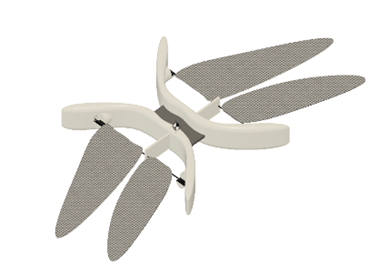
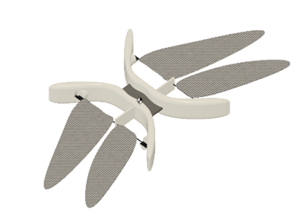

Abstract:Recent research in the field of robotics have brought about a development of variety of novel actuation methods. Mimicking natural mechanisms requires more convoluted actuators. In addition to that the size of actuators is also a limiting factor in design of micro robots or nature inspired robots. The field of robotics have currently witnessed the development of actuation methods such as using light, heat, magnetic waves etc. This paper presents the development of concept of a novel actuator. Further attempt is also made to prove its application in two kinds of insect robot.
Introduction:Insect flight, to an avid viewer appears to be much convoluted. The mechanics these insect uses are difficult to decipher. Insects such as honey bees, butterflies, dragonflies make use of extremely complicated wing motions and aerodynamics to steer themselves with agility. Mimicking the natural model used by these insects and birds to construct micro robots becomes still more convoluted due to unavailability of very small actuators. Even if these actuators are made customarily, the control of wing movements mounted on these actuators is hard. A large number of factors come into play when a dragonfly swooshes through its environment. A dragonfly has four wings connected to the muscles and each of which could be controlled independently. It consists of a pair of wings on each side: a front wing and a hind wing. A dragonfly uses time phase difference between the flapping of its front wings and hind wings to perform motions such as hovering, forward motion, backward motion and agile turning motion. Recent advances in the field of bio robotics has led to the development of actuating methods which use electromagnetic waves [1], pressure waves [2], piezoelectric oscillators [3]. In this paper, the concept of development of an acoustic actuator is discussed. In musical instruments such as guitar, violin; melodies are produced when a string is plucked or vibrated appropriately. Each string based on its length, tension which acts on it and linear density has a resonant mode of frequencies. When the string is vibrated with one of the values of frequency matched by one of its mode, the string begins to vibrate violently with high amplitudes. In contrast to that, a resonator generating sound waves could be used to vibrate stings. This mechanical vibration of string due to resonance effect can be utilized for controlled robot motion. Thus, this motion would actuate extremely minute mechanisms.
Theory:Every object in this universe, depending upon its mass and spring (elastic) constant possess a set of value of natural frequencies. When the object is vibrated externally with these values of frequencies, the object vibrates with a very high amplitudes, this behavior of an object is termed as Resonance. Any object having mass m and spring constant k, has a particular frequency value termed as its natural frequency. When it is vibrated with this value of frequency, Resonance occurs. Resonance is the phenomenon in which a body vibrates with large amplitudes, because of external vibrating frequency equaling its natural frequency.
ActuatorsThe primary part of actuator are the resonators and the string. When signal from the micro-controller is provided to the resonators, the resonators vibrate. This vibration causes the strings to vibrate. The natural modes of frequency of the string depends upon the type of its material (density), tension and length. When the resonator is vibrated with a frequency corresponding to the first mode of vibration of string, the amplitude of vibration increases, and resonance occurs. This vibrational energy can be used for doing work.
Four linear resonance actuators (LRAs) are used to vibrate the string up till the resonance frequency. Here we use a 0934 LRA with 9 mm diameter and 3.4 mm height. These motors vibrate at a frequency of about 170 to 240 Hz.